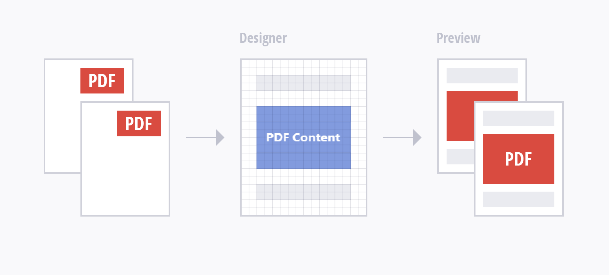

PDF Content
The PDF Content control allows you to render PDF file content in two ways:
Default. Render each PDF file page as a separate report page.

Embed PDF content into a report.

Refer to the following documentation section for more details: Embed PDF File Content into a Report.
Add the PDF Content Control to a Report
Drop the PDF Content item from the Toolbox onto a band on the design surface.
You can also copy a PDF document from an external application and paste it in your report, or drag a document and drop it onto the design surface.
The dragged file's content is assigned to the control's Source property as binary data.
Specify PDF Content
Use one of the following methods:
-
This data is stored in the report file. The source of this data does not need to be available when the report is rendered.
Specify a reference to a PDF document
The reference to the document is stored in the report definition file. The referenced document should be available when the report is rendered.
Specify PDF Data
Expand the PDF Content control's smart tag, click the Source property's ellipsis button, and select a PDF file.

When users save a report, the Source property value persists in the report file.
You can also use report parameters to conditionally specify the Source property value or bind the property to a data source field. Refer to the following section for details: Use Expressions.
Specify a Reference to a PDF Document
Expand the PDF Content control's smart tag, click the Source URL property's ellipsis button, and select a PDF file.
To specify a PDF document location on the Web, assign a document URL to the Source URL property.
You can also use report parameters to conditionally specify the Source Url property value or bind the property to a data source field. Refer to the following section for details: Use Expressions.
When users save a report, the URL or path specified in the Source URL property is included in the report file. The PDF document should be available at the specified location when a report is printed or rendered in Preview.
The Source Url property value takes precedence over the Source property value. If you specify both properties, PDF Content includes the content specified by Source Url. If the file specified in the Source Url property cannot be loaded, the PDF data from the Source property is used.
Use Expressions
Expand the PDF Content control's smart tag and click the Expression property's ellipsis button below the Source or Source URL property.
Use the invoked Expression Editor to create an expression that identifies the source of a PDF file.
Embed PDF File Content into a Report
Add the PDF Content control to a report, specify a PDF file location, and disable the control's Generate Own Pages property.

Use Cases
Create a report with PDF file content and headers / footers that are printed on PDF file pages.
Print pictures, bar codes, page numbers, a report watermark, and other elements over the content of a PDF file.
Create a report document with paper kind that differs from PDF pages paper kind. Refer to the following section for instructions: Fit PDF File's Page Size to Report's Page Size.
Append PDF file content to report content and add sequential numbering to all report pages. For this, add PDF file content as a subreport to your report as described in the following section: Fit PDF File's Page Size to Report's Page Size. Then, add page numbers to both the subreport and main report.
Design a pre-printed form and use PDF file as a watermark.
If your PDF file contains one page, follow the steps below:
- Embed this page into a report's Detail band.
- Remove the report's margins to prevent duplication with PDF page margins.
Adjust the page size to make it fit the entire Detail band.
If your PDF file contains multiple pages, do the following:
- Create a subreport for each of the pages. Follow the instructions in this section: Fit PDF File's Page Size to Report's Page Size. Use the PDF Content control's Page Range property to specify the PDF file page that should be included to a subreport.
- Include each of these subreports to one report.
Fit PDF File's Page Size to Report's Page Size
A PDF file and a report to which you embed PDF file content might have different paper kind. PDF file pages can also be generated with double margins: page margins and report margins.
This section explains how to set the same paper kind for a report and its embedded PDF file and how to include only the PDF file's page margins to the report. The main idea is to create a subreport that includes PDF pages in embedded mode, and then, add this subreport to the main report that contains initial content.
Create a blank report. Set the report's Paper Kind property to the paper kind of the main report to which you want to embed PDF content.
Drop the PDF Content control from the Toolbox onto the created report's Detail band, specify a PDF file source, and disable the control's Generate Own Pages property.
Remove the report's margins and adjust the PDF Content control size to make PDF content fit the entire Detail band.
Add the report as a subreport to your main report. Use the Subreport control with the Generate Own Pages property enabled.
The following image demonstrates the main report's Preview:
Limitations
PDF content is displayed as an image in Preview. Users cannot select text in PDF content. To allow users to select text, export the report to PDF.
You cannot add the PDF Content control to the following bands:
- Top Margin / Bottom Margin
- Page Header / Page Footer
- Group Header / Group Footer bands (if their Repeat Every Page properties are enabled).
- Vertical Header / Vertical Detail / Vertical Total